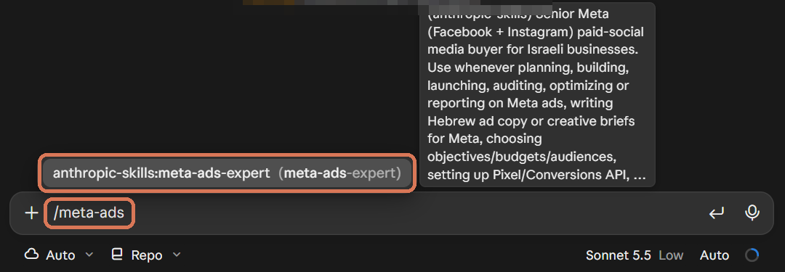

כל הסקילים.


אין עדיין סקיל כזה. עוד סקילים בדרך.
איך מתקינים
1. מורידים את הסקיל
בעמוד של הסקיל לוחצים על "הורדה חינם" ומקבלים קובץ ZIP אחד. לא צריך לפתוח אותו.
2. מעלים אותו ל-Claude
בהגדרות של Claude נכנסים ל-Customize, בוחרים Skills (סקילים), ולוחצים על Add (הוספה). שם בוחרים את הקובץ שהורדתם.

3. משתמשים בו
כותבים בקשה רגילה, ו-Claude מפעיל את הסקיל לבד כשהוא מתאים. רוצים להפעיל אותו בכוח? כותבים / ואת שם הסקיל.

שאלות נפוצות
מה זה סקיל?
חבילת הוראות ש-Claude טוען רק כשצריך אותה. היא מלמדת אותו לעשות משימה אחת כמו מומחה, בלי שתכתבו פרומפט ארוך כל פעם.
כמה זה עולה?
כלום. כל הסקילים חינם.
צריך להירשם?
לא. הסקילים פתוחים לכולם, וההורדה בלחיצה.
זה בטוח להוריד?
לכל סקיל יש קישור לקוד המקור ב-GitHub, אז אפשר לראות בדיוק מה יש בו לפני שמתקינים.
זה עובד גם בקלוד הרגיל, לא רק בקלוד קוד?
כן. מעלים את הסקיל בהגדרות של Claude והוא זמין בשניהם.
רוצים לבנות סקיל משלכם?
במדריך יש פרק שלם על סקילים, ואיך Claude משתמש בהם.